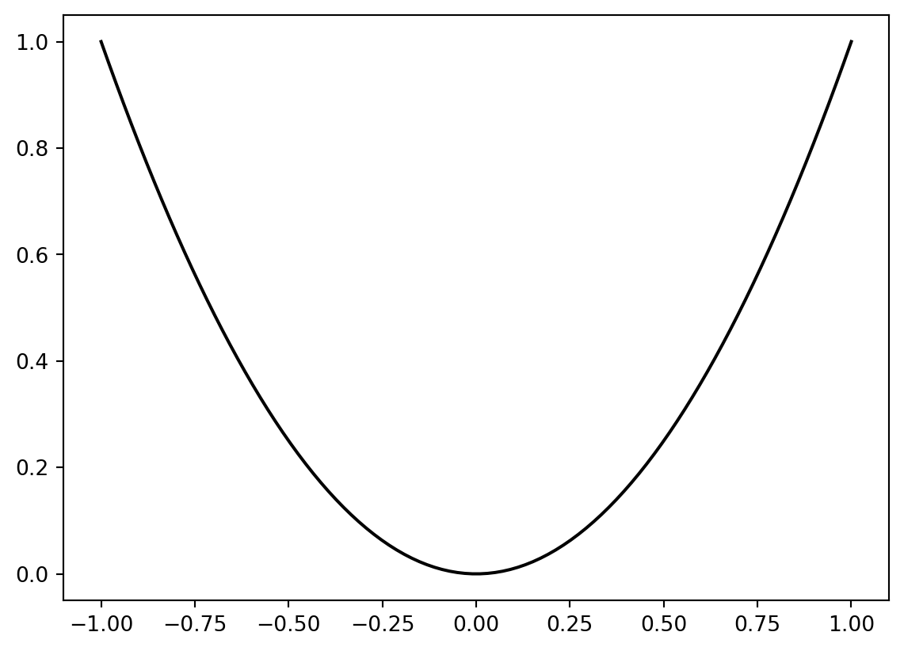
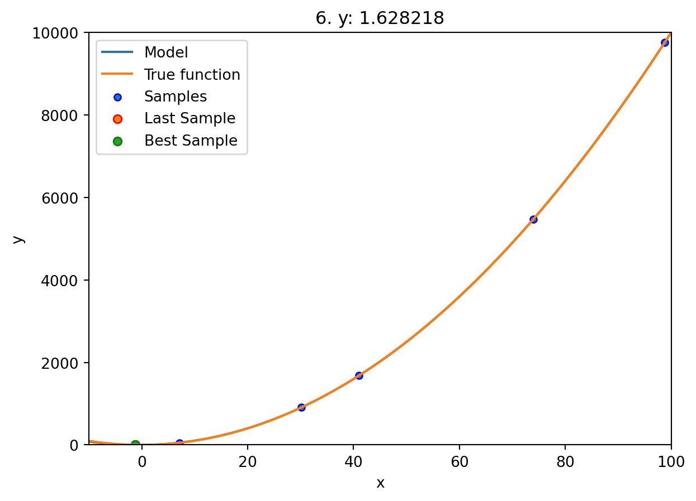
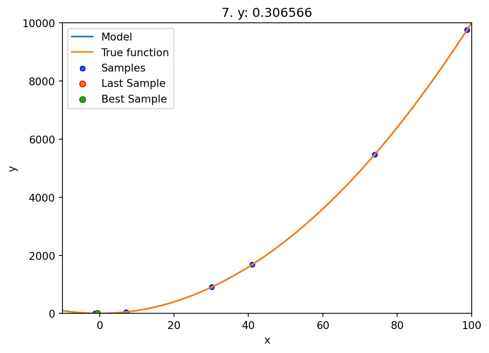
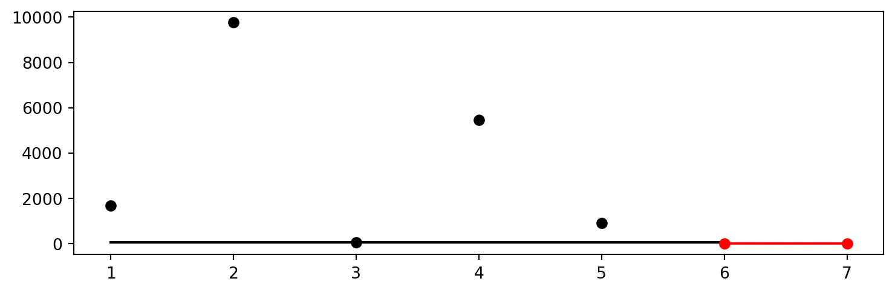
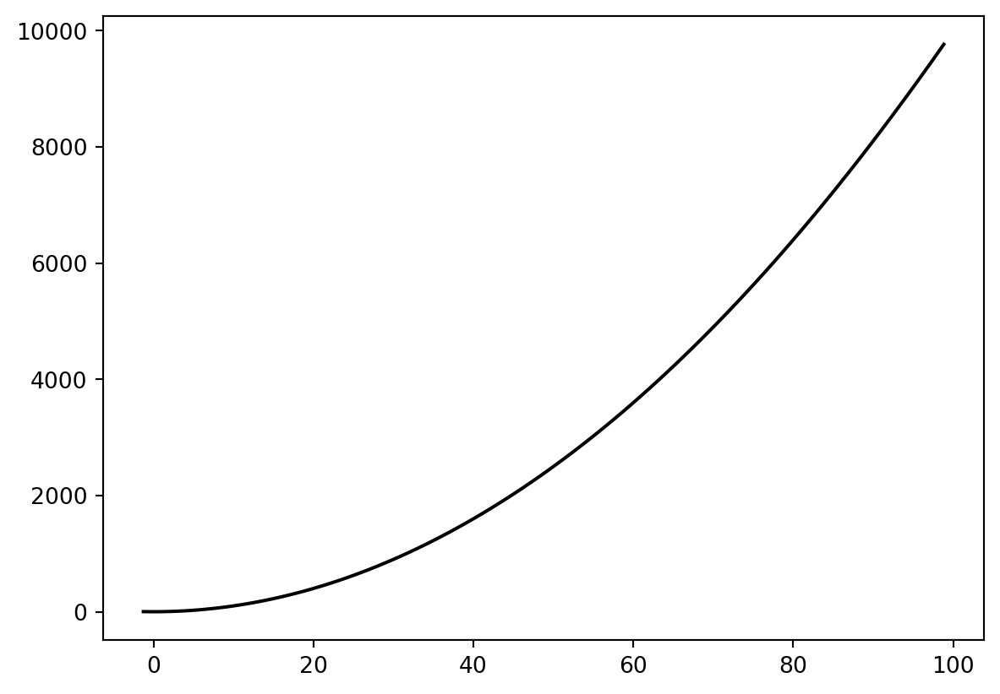

import numpy as np
from math import inf
from spotPython.fun.objectivefunctions import analytical
from spotPython.spot import spot
from scipy.optimize import shgo
from scipy.optimize import direct
from scipy.optimize import differential_evolution
import matplotlib.pyplot as plt21 Documentation of the Sequential Parameter Optimization
This document describes the Spot features.
21.1 Example: spot
21.1.1 The Objective Function
The spotPython package provides several classes of objective functions. We will use an analytical objective function, i.e., a function that can be described by a (closed) formula: \[f(x) = x^2\]
fun = analytical().fun_spherex = np.linspace(-1,1,100).reshape(-1,1)
y = fun(x)
plt.figure()
plt.plot(x,y, "k")
plt.show()
spot_1 = spot.Spot(fun=fun,
lower = np.array([-10]),
upper = np.array([100]),
fun_evals = 7,
fun_repeats = 1,
max_time = inf,
noise = False,
tolerance_x = np.sqrt(np.spacing(1)),
var_type=["num"],
infill_criterion = "y",
n_points = 1,
seed=123,
log_level = 50,
show_models=True,
fun_control = {},
design_control={"init_size": 5,
"repeats": 1},
surrogate_control={"noise": False,
"cod_type": "norm",
"min_theta": -4,
"max_theta": 3,
"n_theta": 1,
"model_optimizer": differential_evolution,
"model_fun_evals": 1000,
})spot’s __init__ method sets the control parameters. There are two parameter groups:
- external parameters can be specified by the user
- internal parameters, which are handled by
spot.
21.1.2 External Parameters
| external parameter | type | description | default | mandatory |
|---|---|---|---|---|
fun |
object | objective function | yes | |
lower |
array | lower bound | yes | |
upper |
array | upper bound | yes | |
fun_evals |
int | number of function evaluations | 15 | no |
fun_evals |
int | number of function evaluations | 15 | no |
fun_control |
dict | noise etc. | {} | n |
max_time |
int | max run time budget | inf |
no |
noise |
bool | if repeated evaluations of fun results in different values, then noise should be set to True. |
False |
no |
tolerance_x |
float | tolerance for new x solutions. Minimum distance of new solutions, generated by suggest_new_X, to already existing solutions. If zero (which is the default), every new solution is accepted. |
0 |
no |
var_type |
list | list of type information, can be either "num" or "factor" |
["num"] |
no |
infill_criterion |
string | Can be "y", "s", "ei" (negative expected improvement), or "all" |
"y" |
no |
n_points |
int | number of infill points | 1 | no |
seed |
int | initial seed. If Spot.run() is called twice, different results will be generated. To reproduce results, the seed can be used. |
123 |
no |
log_level |
int | log level with the following settings: NOTSET (0), DEBUG (10: Detailed information, typically of interest only when diagnosing problems.), INFO (20: Confirmation that things are working as expected.), WARNING (30: An indication that something unexpected happened, or indicative of some problem in the near future (e.g. ‘disk space low’). The software is still working as expected.), ERROR (40: Due to a more serious problem, the software has not been able to perform some function.), and CRITICAL (50: A serious error, indicating that the program itself may be unable to continue running.) |
50 |
no |
show_models |
bool | Plot model. Currently only 1-dim functions are supported | False |
no |
design |
object | experimental design | None |
no |
design_control |
dict | control parameters | see below | no |
surrogate |
surrogate model | kriging |
no | |
surrogate_control |
dict | control parameters | see below | no |
optimizer |
object | optimizer | see below | no |
optimizer_control |
dict | control parameters | see below | no |
- Besides these single parameters, the following parameter dictionaries can be specified by the user:
fun_controldesign_controlsurrogate_controloptimizer_control
21.2 The fun_control Dictionary
| external parameter | type | description | default | mandatory |
|---|---|---|---|---|
sigma |
float | noise: standard deviation | 0 |
yes |
seed |
int | seed for rng | 124 |
yes |
21.3 The design_control Dictionary
| external parameter | type | description | default | mandatory |
|---|---|---|---|---|
init_size |
int | initial sample size | 10 |
yes |
repeats |
int | number of repeats of the initial sammples | 1 |
yes |
21.4 The surrogate_control Dictionary
| external parameter | type | description | default | mandatory |
|---|---|---|---|---|
noise |
||||
model_optimizer |
object | optimizer | differential_evolution |
no |
model_fun_evals |
||||
min_theta |
-3. |
|||
max_theta |
3. |
|||
n_theta |
1 |
|||
n_p |
1 |
|||
optim_p |
False |
|||
cod_type |
"norm" |
|||
var_type |
||||
use_cod_y |
bool | False |
21.5 The optimizer_control Dictionary
| external parameter | type | description | default | mandatory |
|---|---|---|---|---|
max_iter |
int | max number of iterations. Note: these are the cheap evaluations on the surrogate. | 1000 |
no |
21.6 Run
spot_1.run()


<spotPython.spot.spot.Spot at 0x16a1ef8e0>21.7 Print the Results
spot_1.print_results()min y: 0.30656551286610595
x0: -0.5536835855126157[['x0', -0.5536835855126157]]21.8 Show the Progress
spot_1.plot_progress()
21.9 Visualize the Surrogate
- The plot method of the
krigingsurrogate is used. - Note: the plot uses the interval defined by the ranges of the natural variables.
spot_1.surrogate.plot()<Figure size 864x576 with 0 Axes>
21.10 Init: Build Initial Design
from spotPython.design.spacefilling import spacefilling
from spotPython.build.kriging import Kriging
from spotPython.fun.objectivefunctions import analytical
gen = spacefilling(2)
rng = np.random.RandomState(1)
lower = np.array([-5,-0])
upper = np.array([10,15])
fun = analytical().fun_branin
fun_control = {"sigma": 0,
"seed": 123}
X = gen.scipy_lhd(10, lower=lower, upper = upper)
print(X)
y = fun(X, fun_control=fun_control)
print(y)[[ 8.97647221 13.41926847]
[ 0.66946019 1.22344228]
[ 5.23614115 13.78185824]
[ 5.6149825 11.5851384 ]
[-1.72963184 1.66516096]
[-4.26945568 7.1325531 ]
[ 1.26363761 10.17935555]
[ 2.88779942 8.05508969]
[-3.39111089 4.15213772]
[ 7.30131231 5.22275244]]
[128.95676449 31.73474356 172.89678121 126.71295908 64.34349975
70.16178611 48.71407916 31.77322887 76.91788181 30.69410529]21.11 Replicability
Seed
gen = spacefilling(2, seed=123)
X0 = gen.scipy_lhd(3)
gen = spacefilling(2, seed=345)
X1 = gen.scipy_lhd(3)
X2 = gen.scipy_lhd(3)
gen = spacefilling(2, seed=123)
X3 = gen.scipy_lhd(3)
X0, X1, X2, X3(array([[0.77254938, 0.31539299],
[0.59321338, 0.93854273],
[0.27469803, 0.3959685 ]]),
array([[0.78373509, 0.86811887],
[0.06692621, 0.6058029 ],
[0.41374778, 0.00525456]]),
array([[0.121357 , 0.69043832],
[0.41906219, 0.32838498],
[0.86742658, 0.52910374]]),
array([[0.77254938, 0.31539299],
[0.59321338, 0.93854273],
[0.27469803, 0.3959685 ]]))21.12 Surrogates
21.12.1 A Simple Predictor
The code below shows how to use a simple model for prediction. Assume that only two (very costly) measurements are available:
- f(0) = 0.5
- f(2) = 2.5
We are interested in the value at \(x_0 = 1\), i.e., \(f(x_0 = 1)\), but cannot run an additional, third experiment.
from sklearn import linear_model
X = np.array([[0], [2]])
y = np.array([0.5, 2.5])
S_lm = linear_model.LinearRegression()
S_lm = S_lm.fit(X, y)
X0 = np.array([[1]])
y0 = S_lm.predict(X0)
print(y0)[1.5]Central Idea: Evaluation of the surrogate model S_lm is much cheaper (or / and much faster) than running the real-world experiment \(f\).
21.13 Demo/Test: Objective Function Fails
SPOT expects np.nan values from failed objective function values. These are handled. Note: SPOT’s counter considers only successful executions of the objective function.
import numpy as np
from spotPython.fun.objectivefunctions import analytical
from spotPython.spot import spot
import numpy as np
from math import inf
# number of initial points:
ni = 20
# number of points
n = 30
fun = analytical().fun_random_error
lower = np.array([-1])
upper = np.array([1])
design_control={"init_size": ni}
spot_1 = spot.Spot(fun=fun,
lower = lower,
upper= upper,
fun_evals = n,
show_progress=False,
design_control=design_control,)
spot_1.run()
# To check whether the run was successfully completed,
# we compare the number of evaluated points to the specified
# number of points.
assert spot_1.y.shape[0] == n[ 0.53176481 -0.9053821 -0.02203599 -0.21843718 0.78240941 nan
-0.3923345 0.67234256 0.31802454 nan -0.75129705 0.97550354
0.41757584 0.0786237 0.82585329 0.23700598 nan -0.82319082
nan 0.1481835 ]
[-1.]
[-0.3352401][-0.47259301][0.95541987]
[0.17335968][-0.58552368]
[-0.20126111][-0.60100809]
[-0.97897336][nan]
[nan][-0.2748985]
[0.8359486][0.99035591]
[0.01641232][0.5629346]21.14 PyTorch: Detailed Description of the Data Splitting
21.14.1 Description of the "train_hold_out" Setting
The "train_hold_out" setting is used by default. It uses the loss function specfied in fun_control and the metric specified in fun_control.
- First, the method
HyperTorch().fun_torchis called. fun_torc(), which is implemented in the filehypertorch.py, callsevaluate_hold_out()as follows:
df_eval, _ = evaluate_hold_out(
model,
train_dataset=fun_control["train"],
shuffle=self.fun_control["shuffle"],
loss_function=self.fun_control["loss_function"],
metric=self.fun_control["metric_torch"],
device=self.fun_control["device"],
show_batch_interval=self.fun_control["show_batch_interval"],
path=self.fun_control["path"],
task=self.fun_control["task"],
writer=self.fun_control["writer"],
writerId=config_id,
)Note: Only the data set fun_control["train"] is used for training and validation. It is used in evaluate_hold_out as follows:
trainloader, valloader = create_train_val_data_loaders(
dataset=train_dataset, batch_size=batch_size_instance, shuffle=shuffle
)create_train_val_data_loaders() splits the train_dataset into trainloader and valloader using torch.utils.data.random_split() as follows:
def create_train_val_data_loaders(dataset, batch_size, shuffle, num_workers=0):
test_abs = int(len(dataset) * 0.6)
train_subset, val_subset = random_split(dataset, [test_abs, len(dataset) - test_abs])
trainloader = torch.utils.data.DataLoader(
train_subset, batch_size=int(batch_size), shuffle=shuffle, num_workers=num_workers
)
valloader = torch.utils.data.DataLoader(
val_subset, batch_size=int(batch_size), shuffle=shuffle, num_workers=num_workers
)
return trainloader, valloaderThe optimizer is set up as follows:
optimizer_instance = net.optimizer
lr_mult_instance = net.lr_mult
sgd_momentum_instance = net.sgd_momentum
optimizer = optimizer_handler(
optimizer_name=optimizer_instance,
params=net.parameters(),
lr_mult=lr_mult_instance,
sgd_momentum=sgd_momentum_instance,
)evaluate_hold_out()sets thenetattributes such asepochs,batch_size,optimizer, andpatience. For each epoch, the methodstrain_one_epoch()andvalidate_one_epoch()are called, the former for training and the latter for validation and early stopping. The validation loss from the last epoch (not the best validation loss) is returned fromevaluate_hold_out.- The method
train_one_epoch()is implemented as follows:
def train_one_epoch(
net,
trainloader,
batch_size,
loss_function,
optimizer,
device,
show_batch_interval=10_000,
task=None,
):
running_loss = 0.0
epoch_steps = 0
for batch_nr, data in enumerate(trainloader, 0):
input, target = data
input, target = input.to(device), target.to(device)
optimizer.zero_grad()
output = net(input)
if task == "regression":
target = target.unsqueeze(1)
if target.shape == output.shape:
loss = loss_function(output, target)
else:
raise ValueError(f"Shapes of target and output do not match:
{target.shape} vs {output.shape}")
elif task == "classification":
loss = loss_function(output, target)
else:
raise ValueError(f"Unknown task: {task}")
loss.backward()
torch.nn.utils.clip_grad_norm_(net.parameters(), max_norm=1.0)
optimizer.step()
running_loss += loss.item()
epoch_steps += 1
if batch_nr % show_batch_interval == (show_batch_interval - 1):
print(
"Batch: %5d. Batch Size: %d. Training Loss (running): %.3f"
% (batch_nr + 1, int(batch_size), running_loss / epoch_steps)
)
running_loss = 0.0
return loss.item()- The method
validate_one_epoch()is implemented as follows:
def validate_one_epoch(net, valloader, loss_function, metric, device, task):
val_loss = 0.0
val_steps = 0
total = 0
correct = 0
metric.reset()
for i, data in enumerate(valloader, 0):
# get batches
with torch.no_grad():
input, target = data
input, target = input.to(device), target.to(device)
output = net(input)
# print(f"target: {target}")
# print(f"output: {output}")
if task == "regression":
target = target.unsqueeze(1)
if target.shape == output.shape:
loss = loss_function(output, target)
else:
raise ValueError(f"Shapes of target and output
do not match: {target.shape} vs {output.shape}")
metric_value = metric.update(output, target)
elif task == "classification":
loss = loss_function(output, target)
metric_value = metric.update(output, target)
_, predicted = torch.max(output.data, 1)
total += target.size(0)
correct += (predicted == target).sum().item()
else:
raise ValueError(f"Unknown task: {task}")
val_loss += loss.cpu().numpy()
val_steps += 1
loss = val_loss / val_steps
print(f"Loss on hold-out set: {loss}")
if task == "classification":
accuracy = correct / total
print(f"Accuracy on hold-out set: {accuracy}")
# metric on all batches using custom accumulation
metric_value = metric.compute()
metric_name = type(metric).__name__
print(f"{metric_name} value on hold-out data: {metric_value}")
return metric_value, loss21.14.1.1 Description of the "test_hold_out" Setting
It uses the loss function specfied in fun_control and the metric specified in fun_control.
- First, the method
HyperTorch().fun_torchis called. fun_torc()callsspotPython.torch.traintest.evaluate_hold_out()similar to the"train_hold_out"setting with one exception: It passes an additionaltestdata set toevaluate_hold_out()as follows:
test_dataset=fun_control["test"]evaluate_hold_out() calls create_train_test_data_loaders instead of create_train_val_data_loaders: The two data sets are used in create_train_test_data_loaders as follows:
def create_train_test_data_loaders(dataset, batch_size, shuffle, test_dataset,
num_workers=0):
trainloader = torch.utils.data.DataLoader(
dataset, batch_size=int(batch_size), shuffle=shuffle,
num_workers=num_workers
)
testloader = torch.utils.data.DataLoader(
test_dataset, batch_size=int(batch_size), shuffle=shuffle,
num_workers=num_workers
)
return trainloader, testloader- The following steps are identical to the
"train_hold_out"setting. Only a different data loader is used for testing.
21.14.1.2 Detailed Description of the "train_cv" Setting
It uses the loss function specfied in fun_control and the metric specified in fun_control.
- First, the method
HyperTorch().fun_torchis called. fun_torc()callsspotPython.torch.traintest.evaluate_cv()as follows (Note: Only the data setfun_control["train"]is used for CV.):
df_eval, _ = evaluate_cv(
model,
dataset=fun_control["train"],
shuffle=self.fun_control["shuffle"],
device=self.fun_control["device"],
show_batch_interval=self.fun_control["show_batch_interval"],
task=self.fun_control["task"],
writer=self.fun_control["writer"],
writerId=config_id,
)- In `evaluate_cv(), the following steps are performed: The optimizer is set up as follows:
optimizer_instance = net.optimizer
lr_instance = net.lr
sgd_momentum_instance = net.sgd_momentum
optimizer = optimizer_handler(optimizer_name=optimizer_instance,
params=net.parameters(), lr_mult=lr_mult_instance)evaluate_cv() sets the net attributes such as epochs, batch_size, optimizer, and patience. CV is implemented as follows:
def evaluate_cv(
net,
dataset,
shuffle=False,
loss_function=None,
num_workers=0,
device=None,
show_batch_interval=10_000,
metric=None,
path=None,
task=None,
writer=None,
writerId=None,
):
lr_mult_instance = net.lr_mult
epochs_instance = net.epochs
batch_size_instance = net.batch_size
k_folds_instance = net.k_folds
optimizer_instance = net.optimizer
patience_instance = net.patience
sgd_momentum_instance = net.sgd_momentum
removed_attributes, net = get_removed_attributes_and_base_net(net)
metric_values = {}
loss_values = {}
try:
device = getDevice(device=device)
if torch.cuda.is_available():
device = "cuda:0"
if torch.cuda.device_count() > 1:
print("We will use", torch.cuda.device_count(), "GPUs!")
net = nn.DataParallel(net)
net.to(device)
optimizer = optimizer_handler(
optimizer_name=optimizer_instance,
params=net.parameters(),
lr_mult=lr_mult_instance,
sgd_momentum=sgd_momentum_instance,
)
kfold = KFold(n_splits=k_folds_instance, shuffle=shuffle)
for fold, (train_ids, val_ids) in enumerate(kfold.split(dataset)):
print(f"Fold: {fold + 1}")
train_subsampler = torch.utils.data.SubsetRandomSampler(train_ids)
val_subsampler = torch.utils.data.SubsetRandomSampler(val_ids)
trainloader = torch.utils.data.DataLoader(
dataset, batch_size=batch_size_instance,
sampler=train_subsampler, num_workers=num_workers
)
valloader = torch.utils.data.DataLoader(
dataset, batch_size=batch_size_instance,
sampler=val_subsampler, num_workers=num_workers
)
# each fold starts with new weights:
reset_weights(net)
# Early stopping parameters
best_val_loss = float("inf")
counter = 0
for epoch in range(epochs_instance):
print(f"Epoch: {epoch + 1}")
# training loss from one epoch:
training_loss = train_one_epoch(
net=net,
trainloader=trainloader,
batch_size=batch_size_instance,
loss_function=loss_function,
optimizer=optimizer,
device=device,
show_batch_interval=show_batch_interval,
task=task,
)
# Early stopping check. Calculate validation loss from one epoch:
metric_values[fold], loss_values[fold] = validate_one_epoch(
net, valloader=valloader, loss_function=loss_function,
metric=metric, device=device, task=task
)
# Log the running loss averaged per batch
metric_name = "Metric"
if metric is None:
metric_name = type(metric).__name__
print(f"{metric_name} value on hold-out data:
{metric_values[fold]}")
if writer is not None:
writer.add_scalars(
"evaluate_cv fold:" + str(fold + 1) +
". Train & Val Loss and Val Metric" + writerId,
{"Train loss": training_loss, "Val loss":
loss_values[fold], metric_name: metric_values[fold]},
epoch + 1,
)
writer.flush()
if loss_values[fold] < best_val_loss:
best_val_loss = loss_values[fold]
counter = 0
# save model:
if path is not None:
torch.save(net.state_dict(), path)
else:
counter += 1
if counter >= patience_instance:
print(f"Early stopping at epoch {epoch}")
break
df_eval = sum(loss_values.values()) / len(loss_values.values())
df_metrics = sum(metric_values.values()) / len(metric_values.values())
df_preds = np.nan
except Exception as err:
print(f"Error in Net_Core. Call to evaluate_cv() failed. {err=},
{type(err)=}")
df_eval = np.nan
df_preds = np.nan
add_attributes(net, removed_attributes)
if writer is not None:
metric_name = "Metric"
if metric is None:
metric_name = type(metric).__name__
writer.add_scalars(
"CV: Val Loss and Val Metric" + writerId,
{"CV-loss": df_eval, metric_name: df_metrics},
epoch + 1,
)
writer.flush()
return df_eval, df_preds, df_metricsThe method
train_fold()is implemented as shown above.The method
validate_one_epoch()is implemented as shown above. In contrast to the hold-out setting, it is called for each of the \(k\) folds. The results are stored in a dictionariesmetric_valuesandloss_values. The results are averaged over the \(k\) folds and returned asdf_eval.
21.14.1.3 Detailed Description of the "test_cv" Setting
It uses the loss function specfied in fun_control and the metric specified in fun_control.
- First, the method
HyperTorch().fun_torchis called. fun_torc()callsspotPython.torch.traintest.evaluate_cv()as follows:
df_eval, _ = evaluate_cv(
model,
dataset=fun_control["test"],
shuffle=self.fun_control["shuffle"],
device=self.fun_control["device"],
show_batch_interval=self.fun_control["show_batch_interval"],
task=self.fun_control["task"],
writer=self.fun_control["writer"],
writerId=config_id,
)Note: The data set fun_control["test"] is used for CV. The rest is the same as for the "train_cv" setting.
21.14.1.4 Detailed Description of the Final Model Training and Evaluation
There are two methods that can be used for the final evaluation of a Pytorch model:
"train_tunedand"test_tuned".
train_tuned() is just a wrapper to evaluate_hold_out using the train data set. It is implemented as follows:
def train_tuned(
net,
train_dataset,
shuffle,
loss_function,
metric,
device=None,
show_batch_interval=10_000,
path=None,
task=None,
writer=None,
):
evaluate_hold_out(
net=net,
train_dataset=train_dataset,
shuffle=shuffle,
test_dataset=None,
loss_function=loss_function,
metric=metric,
device=device,
show_batch_interval=show_batch_interval,
path=path,
task=task,
writer=writer,
)The test_tuned() procedure is implemented as follows:
def test_tuned(net, shuffle, test_dataset=None, loss_function=None,
metric=None, device=None, path=None, task=None):
batch_size_instance = net.batch_size
removed_attributes, net = get_removed_attributes_and_base_net(net)
if path is not None:
net.load_state_dict(torch.load(path))
net.eval()
try:
device = getDevice(device=device)
if torch.cuda.is_available():
device = "cuda:0"
if torch.cuda.device_count() > 1:
print("We will use", torch.cuda.device_count(), "GPUs!")
net = nn.DataParallel(net)
net.to(device)
valloader = torch.utils.data.DataLoader(
test_dataset, batch_size=int(batch_size_instance),
shuffle=shuffle,
num_workers=0
)
metric_value, loss = validate_one_epoch(
net, valloader=valloader, loss_function=loss_function,
metric=metric, device=device, task=task
)
df_eval = loss
df_metric = metric_value
df_preds = np.nan
except Exception as err:
print(f"Error in Net_Core. Call to test_tuned() failed. {err=},
{type(err)=}")
df_eval = np.nan
df_metric = np.nan
df_preds = np.nan
add_attributes(net, removed_attributes)
print(f"Final evaluation: Validation loss: {df_eval}")
print(f"Final evaluation: Validation metric: {df_metric}")
print("----------------------------------------------")
return df_eval, df_preds, df_metric